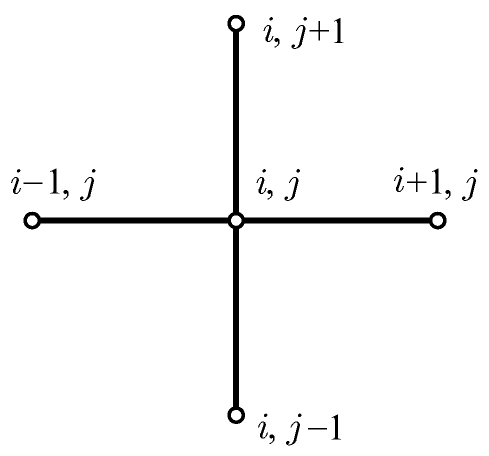
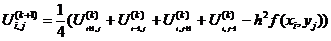
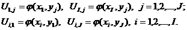

Решить краевую задачу для заданного уравнения методом сеток и реализовать его как систему программных единиц в СКМ MatLab.
Заданное уравнение:

Граничные условия:

Суть метода сеток состоит в следующем: область непрерывного изменения аргументов, в которой ищется решение уравнения, дополненного, если необходимо, краевыми и начальными условиями, заменяется дискретным множеством точек (узлов), называемым сеткой; вместо функций непрерывного аргумента рассматриваются функции дискретного аргумента, определяемые в узлах сетки и называемые сеточными функциями; производные, входящие в уравнение, краевые и начальные условия, аппроксимируются разностными отношениями; интегралы аппроксимируются квадратурными формулами; при этом исходное уравнение (задача) заменяется системой (линейных, если исходная задача была линейной) алгебраических уравнений (системой сеточных уравнений, а применительно к дифференциальным уравнениям — разностной схемой).
Если полученная таким образом система сеточных уравнений разрешима, по крайней мере, на достаточно мелкой сетке, т. е. сетке с густым расположением узлов, и её решение при неограниченном измельчании сетки приближается (сходится) к решению исходного уравнения (задачи), то полученное на любой фиксированной сетке решение и принимается за приближённое решение исходного уравнения (задачи).
Для построения разностной схемы решения задачи строим в области D = {(x,t) | 0 ? x ? L, 0 ? y ? L } сетку xi = ih, i=1,2 ... n , yj = j*h , j = 1,2 ... , n, и аппроксимируем уравнение в каждом внутреннем узле сетки на шаблоне типа “крест”.
Аппроксимацию уравнения будем проводить по неявной схеме.

Разностная схема имеет вид:
Граничное условие:
В теории разностных схем доказывается, что решение построенной разностной задачи существует, а сама схема устойчива. Для решения задачи можно использовать итерационный метод Гаусса-Зейделя решения системы разностных уравнений.
N = 20; % число отрезков
L = 0.4; % длина
lambda = 46; % параметр
xmin = 0; % начальное значние x
ymin = 0; % начальное значение y
h = L/N; % шаг
% создаем сетку
for i=1:N+1
x(i)=xmin + (i-1)*h;
y(i)=ymin + (i-1)*h;
end;
U = zeros(N+1);
% записываем граничные условия
for i=1:N+1
for j=1:N+1
U(1,j)=Fi(x(1),y(j));
U(N+1,j)=Fi(x(N+1),y(j));
U(i,1)=Fi(x(i),y(1));
U(i,N+1)=Fi(x(i),y(N+1));
end;
end;
M = 0; % начальное приближение
e = 0.01; % точность
% первая итерация
for i=2:N
for j=2:N
v = (U(i+1,j)+U(i-1,j)+U(i,j+1)+U(i,j-1)-(-F(x(i),y(j))/lambda)*h*h)/4;
d = abs(v-U(i,j));
U(i,j) = v;
if (M > d) M = d;
end;
end;
end;
% достигаем требуемой точности
while (M > e)
for i=2:N
for j=2:N
v = (U(i+1,j)+U(i-1,j)+U(i,j+1)+U(i,j-1)-(-F(x(i),y(j))/lambda)*h*h)/4;
d = abs(v-U(i,j));
U(i,j) = v;
if (M > d) M = d;
end;
end;
end;
end;
% вывод графика
figure(1);
surf(x,y,U);
function Fi = Fi(x,y) Fi = 0;
function F = F(x,y);
if ((x>=0.29 & x<=0.31)&(y>=0.29 & y<=0.31))
F = -200;
elseif ((x>=0.09 & x<=0.11) & (y>=0.09 & y<=0.11))
F = 150;
else
F = 0;
end;

График:

График показывает распределение плотности заряда на прямоугольной пластине.